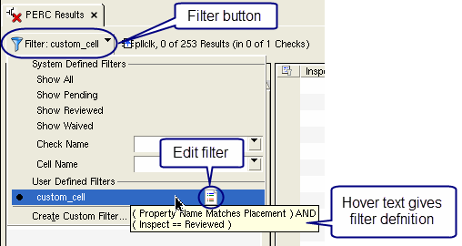

Creating and Editing Custom Results Filters in Calibre RVE for PERC
Custom result
filters allow you to specify multiple conditions for a filter, such
as check name, property value, waived state, and other conditions.
Custom filters are saved and included in the filter list.
Prerequisites
A Calibre PERC or Calibre PERC LDL results database open in Calibre RVE for PERC.
Video
The video “How to Include and Exclude Rule Checks to Filter Results in Calibre RVE” demonstrates how to create a custom filter to include and exclude rule checks from the view.
Procedure
- Do one of the following to
open the Filter Editor:
To create a new filter — Click the filter button
 and
choose “Create Custom Filter.”
and
choose “Create Custom Filter.”To edit an existing filter — Click the filter button
, hover
over the filter you want to edit, then click the icon,
as shown in the following figure. If the filter is already selected, the icon appears without hovering.